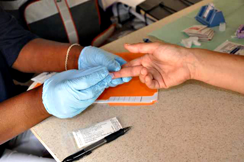
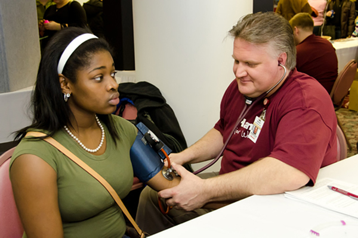
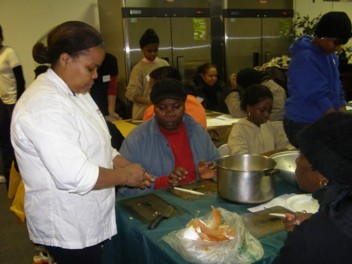
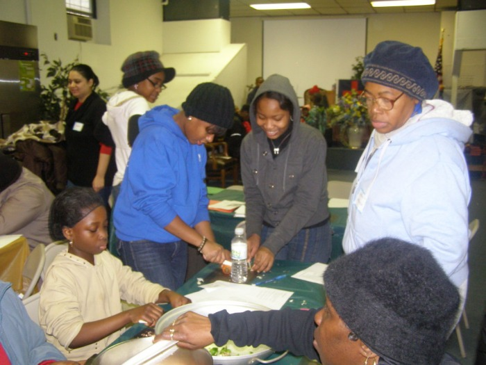
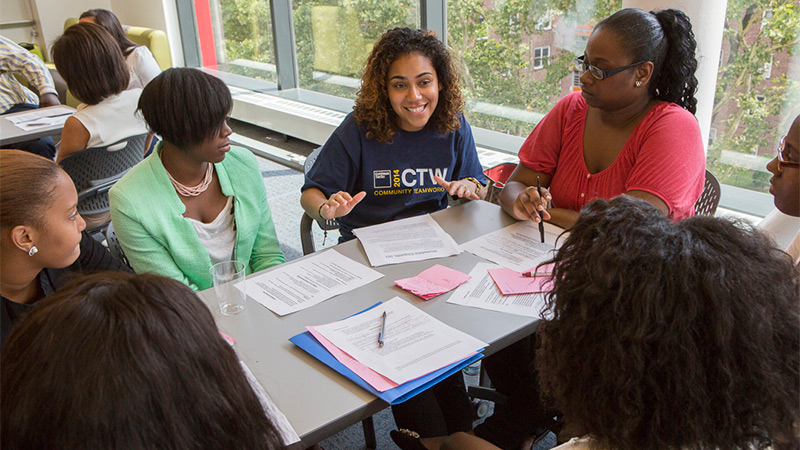
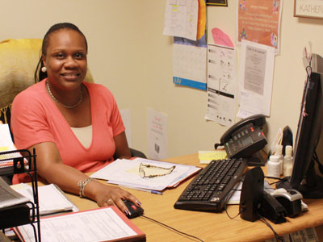

We work in partnership with Universities, Colleges, Middle/High Schools and several Youth Development Organizations to provide the youth opportunities for empowerment, community service, leadership development and academic support. Every week several youth (including special education students) are engaged in different activities that benefit both the participants and the community. The objective is to provide a safe and warm environment where youth feel welcome to engage in skill-building services that will positively impact their career aspirations and create a community link between generations and support our program services.
In partnership with City Harvest For New York City provide food support to families specifically for children 19 years and under Monday through Sunday. The objective is to offer nutritious meals to under-served youth in the South Bronx and to create a safe, healthy environment for youth to turn to during the summer.
We provide nutrition training to children and parents because the populations we serve have a high rate of obesity and diabetes. The program goal is to help clients know how to use the products and produce we provide at the pantry. It encourages positive eating behaviors by helping increase nutrition-related knowledge and changing skills, attitudes, and practices. Families learn together to prepare meals, learn about foods that will positively impact their health, and discover ways to stretch their dollars so they don’t go hungry. The overall objective is to reduce the high rate of obesity, diabetes and other health-related problems that is affecting a large portion of our community; to educate and empower each family to change potential life-threatening habits in a manageable, unique manner and to get to the source of all health related issues and create solutions for a healthier South Bronx.
The Senior Wellness Program is a weekly program that provides free health and nutrition classes, free health screening, free meal and free pantry to adults ages 55 and up on Thursdays from 12 pm – 3pm. This program is provided in partnership with Cornell University Cooperative Extension and supported by various program partners. The Senior Wellness Program has a wide selection of weekly activities and community service/volunteer opportunities for seniors that are seeking to volunteer their time and skills to stay active and enrich their lives and help make good things happen in the community. Every Thursday @ 12pm - 2pm
-

-

-

-

-

-

The HIV/AIDS Outreach provides workshops/seminars and on-site testing/screening/referral to our community residents. Agencies that participate in this outreach include Bronx Aids Services, Elbert Einstein University Teaching Hospital, Harlem United, Latino Commission on AIDS, National Black leadership Commission on AIDS, etc. The objective is to educate the community and thereby stop the spread of preventable diseases; to support network for individuals that are infected or are substance abusers and to open the conversation of health to a wider group of people.
In partnership with the Department of Health, we provide weekly blood pressure screening to our clients in an effort to reduce the devastating effect that high blood pressure has on our community. After the screening clients that need medical care are referred to their primary care providers or appropriate health facility for follow-up/treatment. Every Thursday and Saturday from 10 am.
We provide nutrition training to children and parents because the populations we serve have a high rate of obesity and diabetes. The program goal is to help clients know how to use the products and produce we provide at the pantry. It encourages positive eating behaviors by helping increase nutrition-related knowledge and changing skills, attitudes, and practices. Families learn together to prepare meals, learn about foods that will positively impact their health, and discover ways to stretch their dollars so they don’t go hungry. The overall objective is to reduce the high rate of obesity, diabetes and other health-related problems that is affecting a large portion of our community; to educate and empower each family to change potential life-threatening habits in a manageable, unique manner and to get to the source of all health related issues and create solutions for a healthier South Bronx.
Our Center works in partnership with health insurance agencies to enroll our community residents with the health insurance of their choice. This program has benefited a lot of immigrants in our community. The objective is to make certain that every individual, regardless of economic or immigration status is insured. Services are available on Thursday and Saturday from 10 am.
In conjunction with Work Force 1, Bronx Office we provide job screening and referral because our ultimate goal is to get the clients to become self-sufficient or independent. The objective is to be a practical, informative solution for unemployed individuals and to provide contacts, education and skill building that will further each client’s job prospects.